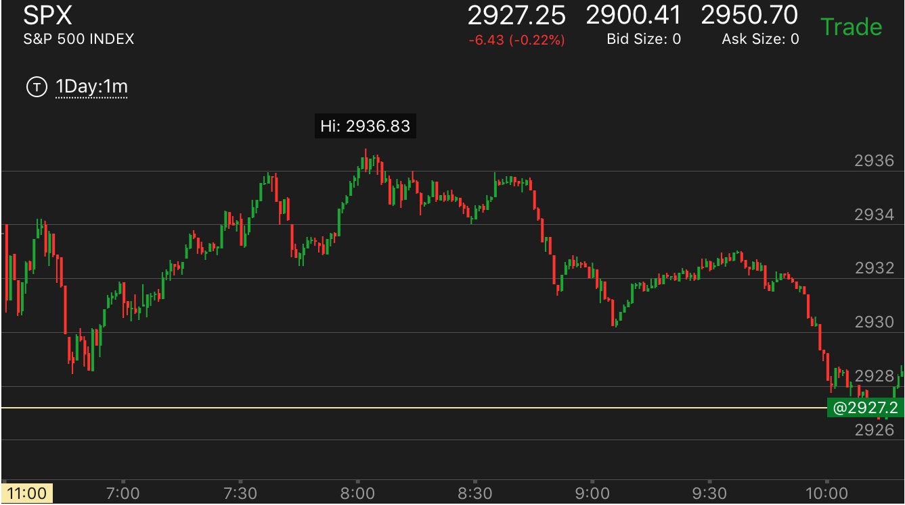

从高点快速下跌后，缓慢反弹，会超过高点，快速上涨也一样
- 从最近的高点，快速下跌。这样的走势一定会反弹。不会是真实的下跌。一旦停止，开始缓慢走高的时候，就应该做多。
- 一定要从比较高的点，甚至附近震荡的最高点。
- 同时也要判断它是否有有理由上涨，比如需要填空。或者需要新高。
- 下跌的时候，可能出现两段下跌，但是也可能就是一段。
- 相反的方向也有一样的走势
从高点快速下跌后，缓慢上涨，超过高点。
从高点快速下跌后，缓慢上涨，超过高点。
TOP

图示：
1. 注意10：50和11：20的两个下跌。10：50的下跌，不是从高点下跌，反弹速度很快。所以回到原位。
11：20的下跌，先冲高，然后大跌，速度很快，然后立刻反弹，拉回，走平几分钟。这样就很慢。它一定会超过高点的。
从更大的走势看，它应该超过2932这个点填补真空，而且是缓慢上涨。所以两者结合，一定会涨的。
2. 12:30开始的下跌，也是从最高点下跌。分成两段走势。速度比较块。这样也一定会反弹。但是它反弹速度很快。一下超过了下跌高点。说明这个是最后的
上涨。未来要跌了。它勉强超过了下跌的高点后，大跌。

图示：7：40 从最高点，快速下跌。出现了两段下跌走势。而它反弹很慢。说明未来一定会超过下跌的高点。